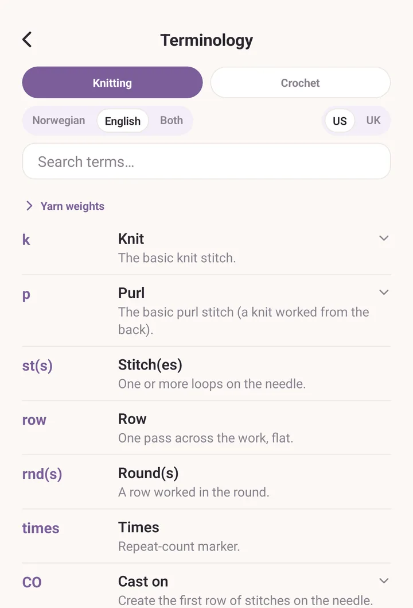
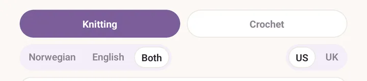
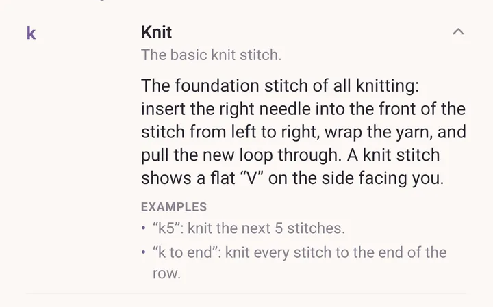
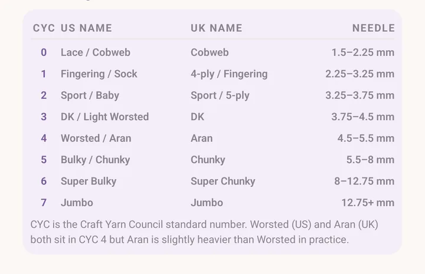

Terminology glossary
A bilingual knitting and crochet glossary. Norwegian abbreviations and English ones, side by side or one at a time, with US and UK English variants where they diverge.
Opening it
Three ways in:
- More > Terminology, in the Tools section.
- The Terminology button in the pattern reader header, which opens the glossary already on the pattern's craft.
- The Terminology tool in the PDF viewer's tool fan, which does the same.
Inside the pattern editor, where you write your own patterns, the Abbreviations (optional) section has its own glossary picker. Search it, tick the terms you want, and the button at the bottom adds them to your pattern's abbreviation list.

Craft
Switch between Knitting and Crochet at the top. The glossary shows that craft's terms.
The language picker
Under the craft chips: Norwegian, English, Both.
- Norwegian: only the Norwegian entries. Best when following a Norwegian pattern. Culturally Norwegian ideas (lus, kofte, selburose, Setesdal) live here.
- English: only the English entries. Best when following an English pattern.
- Both: each entry shows its Norwegian and English forms side by side. Best for translating mid-pattern.
The picker remembers your choice for next time, and it is independent of the language the app itself is set to. You can run Purl in Norwegian and browse the English terms.

Search
Type in the search field. It matches abbreviations, full names, definitions, the longer explanations, the examples, and alternative spellings. Accents are folded, so "lus" finds "lús" and "2 saman" finds "2 sm".
Tap a term to learn more
Terms with a fuller write-up show a small chevron. Tap the row and it opens into a plain-language explanation with a worked example or two, in whichever language you are browsing.

US and UK crochet terms
With Crochet selected and the search empty, a card near the top warns that the terms shown are the US ones and gives the quick conversion, because UK patterns use the same names for different stitches. Individual terms carry their UK variant inline as well.
Yarn weights
Yarn weights is a folded card near the top of the list. Tap it open for a reference table: the CYC number, the US name, the UK name, and a typical Needle size.
The note underneath explains that CYC is the Craft Yarn Council's standard number, and that Worsted and Aran both sit at CYC 4 although Aran runs slightly heavier in practice.
Yarn weight names stay in English throughout the app. They are the industry's own names, and translating them would lose the recognition that makes them useful.

What's not in it
Your own abbreviations. Custom abbreviations for your pattern go on that pattern's abbreviation list in the pattern editor, not into the glossary. The glossary stays canonical.
See also
- Patterns: using the glossary while writing a pattern.
- PDF tools: the Terminology tool in the PDF viewer's tool fan.
- Calculator: the other tool that reads a pattern's numbers for you.